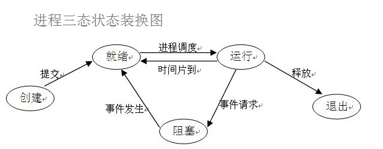

Xiaobooo面试之进程和线程的区别

XiaoBooo
4月26,2018
面试
进程
进程是一个具有独立功能的程序关于某个数据集合的以此运行活动。是系统进行资源分配和调度的独立单位，也是基本的执行单元。是一个动态的概念，是一个活动的实体。它不只是程序的代码，还包括当前的活动。 进程结构特征：由程序、数据和进程控制块三部分组成。具有独立性、并发性、异步性和动态性的特点。 （1)、进程的概念主要有两点： 第一，进程是一个实体。每一个进程都有它自己的地址空间，一般情况下，包括文本区域（text region）--存储处理器执行的代码，数据区域（data region）--存储程序执行期间的一些数据变量，堆栈（stack region）--存储动态分配的内存和本地变量及指令。 第二：进程是一个“执行中的程序”。程序是一个没有生命的实体，只有在运行时处理器才会赋予它生命，才能成为一个活动的实体，我们称其为“进程”。每一个进程都会有一个独一无二的编号，被称为进程标识码，简称PID（Process，identifier） (2)、进程的状态： 就绪（Ready）状态：当进程分配到除CPU以外的必要资源后，只要再获得CPU，便可以立即执行，进程这时的状态为就绪状态。在一个系统中处于就绪状态的进程可能有多个，通常将它们排成一个队列，称为就绪队列。 阻塞(Blocked)状态：正在执行的进程由于发生某事件或接受某消息无法继续执行时，便放弃处理机而处于暂停状态，也即进程的执行收到阻塞，把这种暂停状态称为阻塞状态，有时也称为等待状态和封锁状态。通常使进程处于阻塞的原因有：请求I/O，申请缓冲空间。也会产生一个相应的阻塞队列。 运行（Running）状态：进程已获得CPU，其程序正在执行。在单处理机系统中，只有一个进程处于执行状态，在多处理机系统中，则有多个进程处于执行状态；
(3)进程间通信的方式 （1）管道（pipe）及有名管道（named pipe）：管道可用于具有亲缘关系的父子进程间的通信，有名管道除了具有管道所具有的功能外，它还允许无亲缘关系进程间的通信。 （2）信号（signal）：信号是在软件层次上对中断机制的一种模拟，它是比较复杂的通信方式，用于通知进程有某事件发生，一个进程收到一个信号与处理器收到一个中断请求效果上可以说是一致的。 （3）消息队列（message queue）：消息队列是消息的链接表，它克服了上两种通信方式中信号量有限的缺点，具有写权限得进程可以按照一定得规则向消息队列中添加新信息；对消息队列有读权限得进程则可以从消息队列中读取信息。 （4）共享内存（shared memory）：可以说这是最有用的进程间通信方式。它使得多个进程可以访问同一块内存空间，不同进程可以及时看到对方进程中对共享内存中数据得更新。这种方式需要依靠某种同步操作，如互斥锁和信号量等。
线程
线程是进程中执行运算的最小单位，是进程中的一个实体，是被系统独立调度和分派的基本单位，线程自己不拥有系统资源，只拥有一点在运行中必不可少的资源（程序计数器，一组寄存器和栈），但它可与同属一个进程的其他线程共享进程所拥有的全部资源。 线程优点： （1）易于调度。 （2）提高并发性。通过线程可方便有效地实现并发性。进程可创建多个线程来执行同一个程序的不同部分。 （3）开销少。创建线程比创建进程要快，所需开销少，占用的资源也少； （4）充分发挥多处理器的功能。通过创建多线程进程，每个线程在一个处理器上运行，从而实现应用程序的并发性，是每个处理器都得到充分的运行。
进程与线程的区别
（1）调度：线程作为处理器调度和分配的基本单位，而进程是作为拥有资源的基本单位 （2）并发性：不仅进程之间可以并发执行，同一个进程的多个线程之间也可并发执行 （3）拥有资源：进程是拥有资源的一个独立单位，有自己独立的地址空间；线程不拥有系统资源，但可以访问隶属于进程的资源，共享进程的地址空间. （4）系统开销：在创建或撤消进程时，由于系统都要为之分配和回收资源，导致系统的开销明显大于创建或撤消线程时的开销。
进程和线程的关系
（1）一个线程只能属于一个进程，而一个进程可以有多个线程，但至少有一个线程。线程是操作系统可识别的最小执行和调度单位。 （2）资源分配给进程，同一进程的所有线程共享该进程的所有资源。 同一进程中的多个线程共享代码段(代码和常量)，数据段(全局变量和静态变量)，扩展段(堆存储)。但是每个线程拥有自己的栈段，栈段又叫运行时段，用来存放所有局部变量和临时变量。 （3）处理机分给线程，即真正在处理机上运行的是线程。 （4）线程在执行过程中，需要协作同步。不同进程的线程间要利用消息通信的办法实现同步。
参考资料： https://www.cnblogs.com/losing-1216/p/5083097.html https://blog.csdn.net/gogokongyin/article/details/51346193